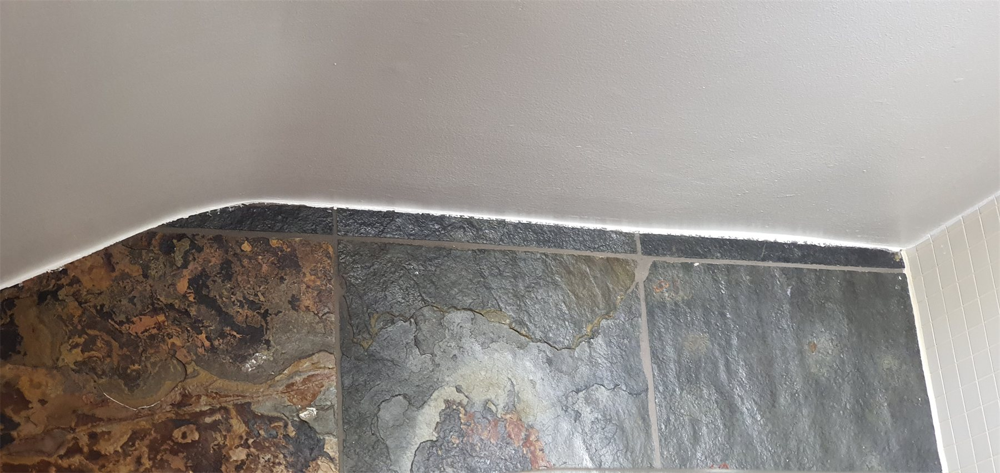
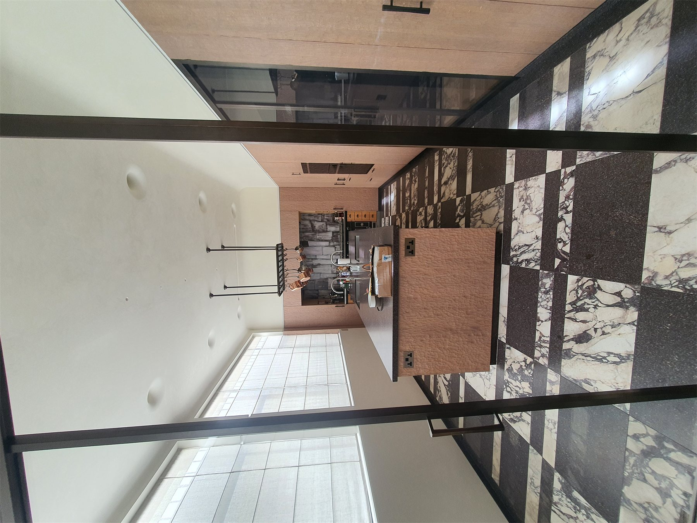
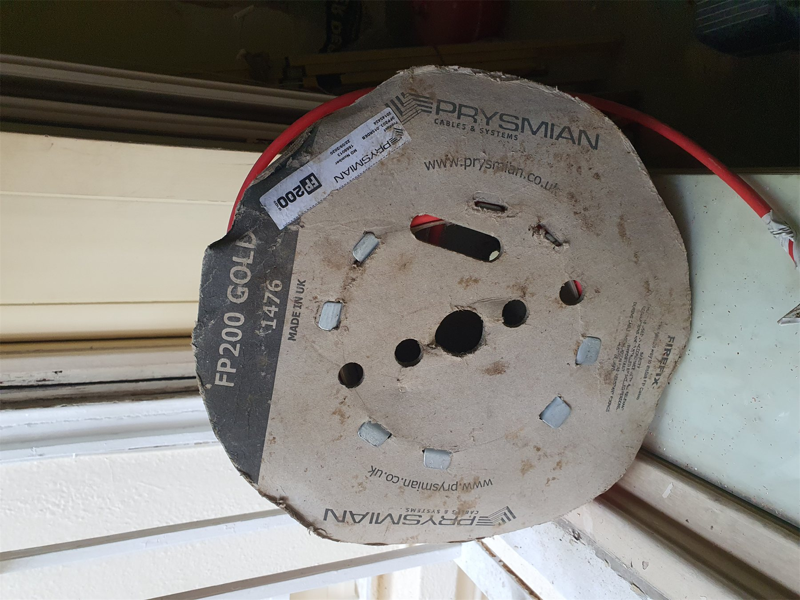
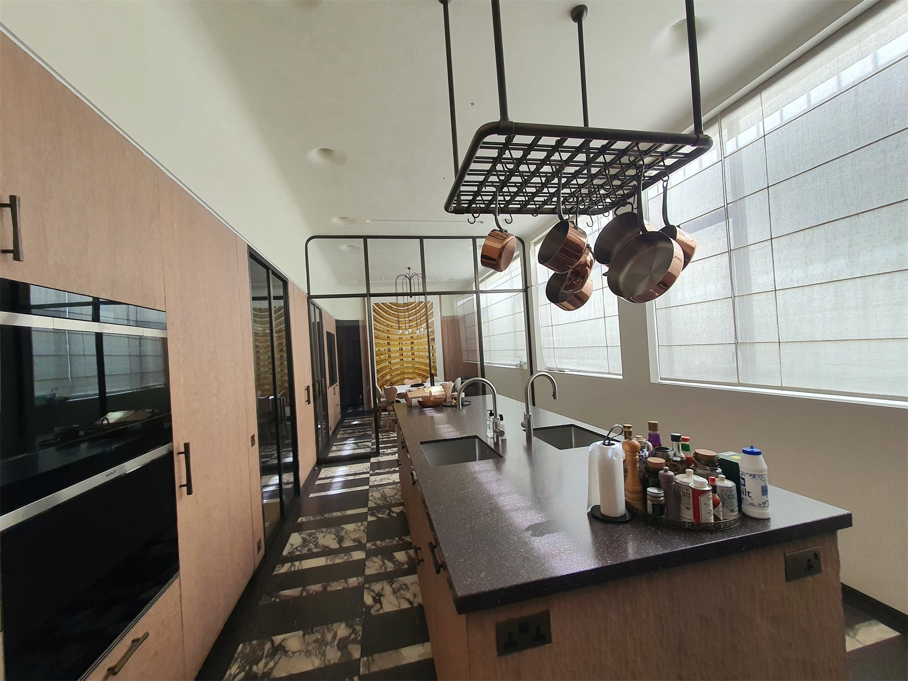
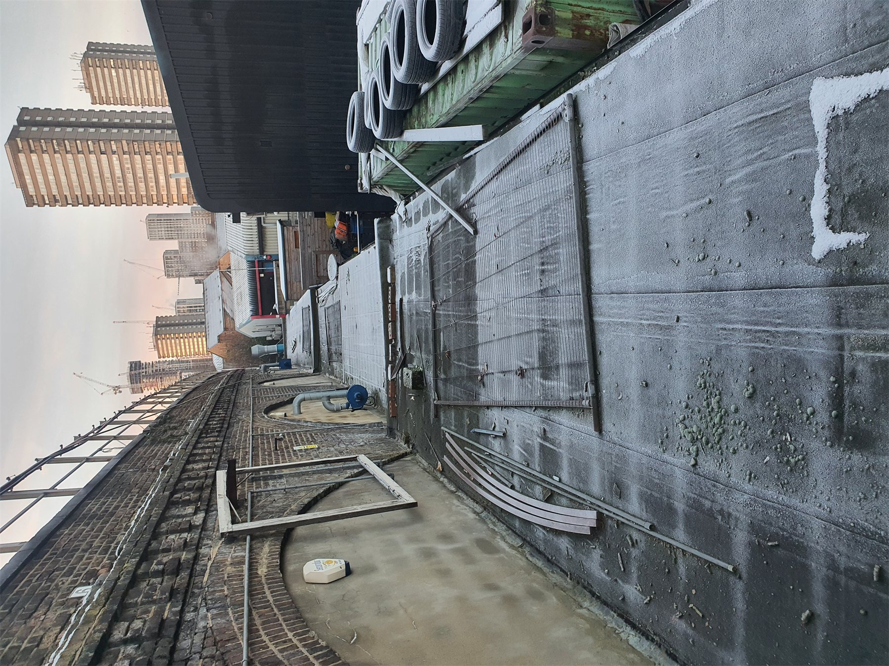
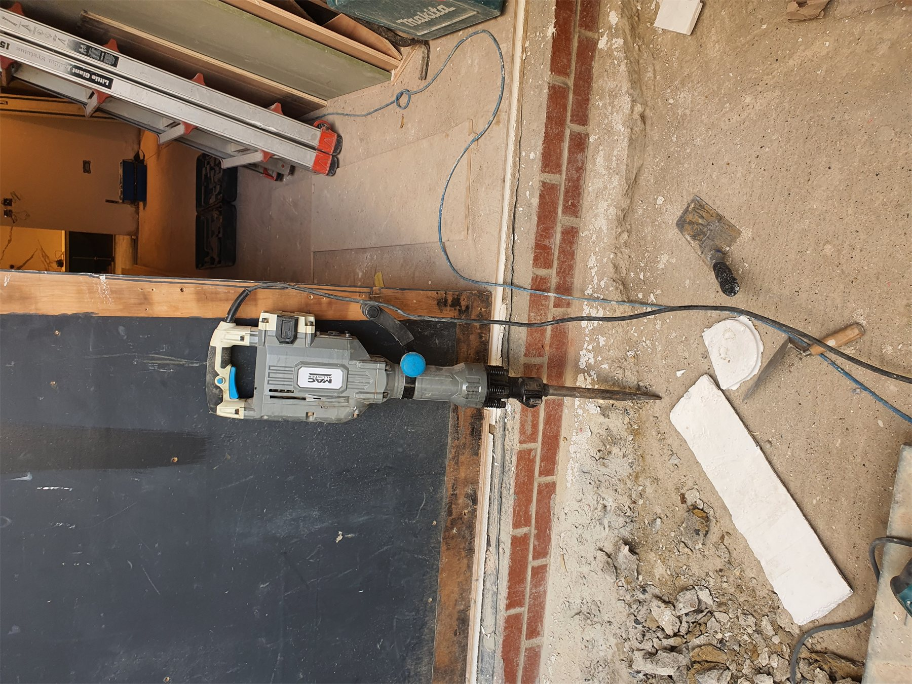
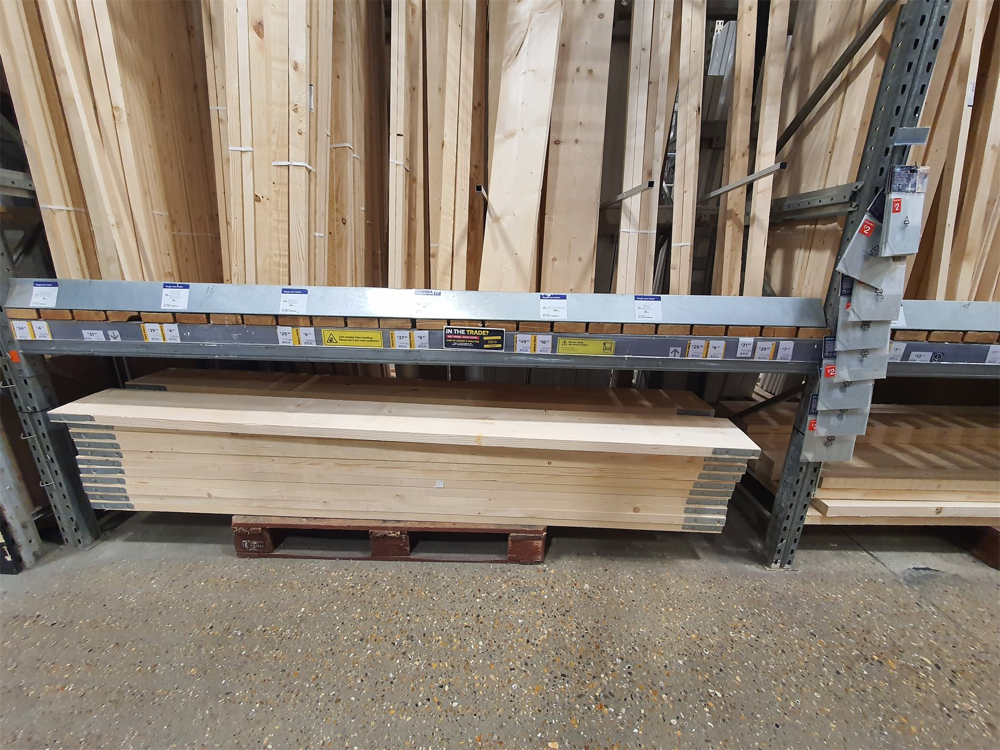
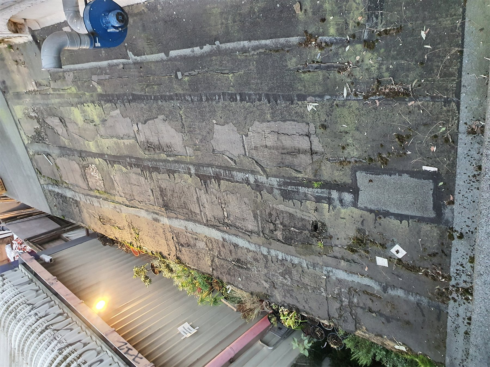

Building work
Reliable practical work planned around the needs of the space, access and finish.
Building · Interiors · Automation
Profito.systems brings building work, interior solutions and useful automation together in one clear process.
What we do
A practical first conversation, a clear scope and the right mix of hands-on work and technology for the space.
Reliable practical work planned around the needs of the space, access and finish.
Functional finishes and details that make everyday use easier and more comfortable.
Straightforward technology that adds comfort and control without unnecessary complexity.
Selected work
A representative selection from the project archive. The full asset set remains in the repository for future case studies.








Useful tool
Use the browser-based tool to detect an A4 sheet and establish a measurement scale from a photo.
Next step